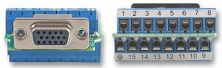
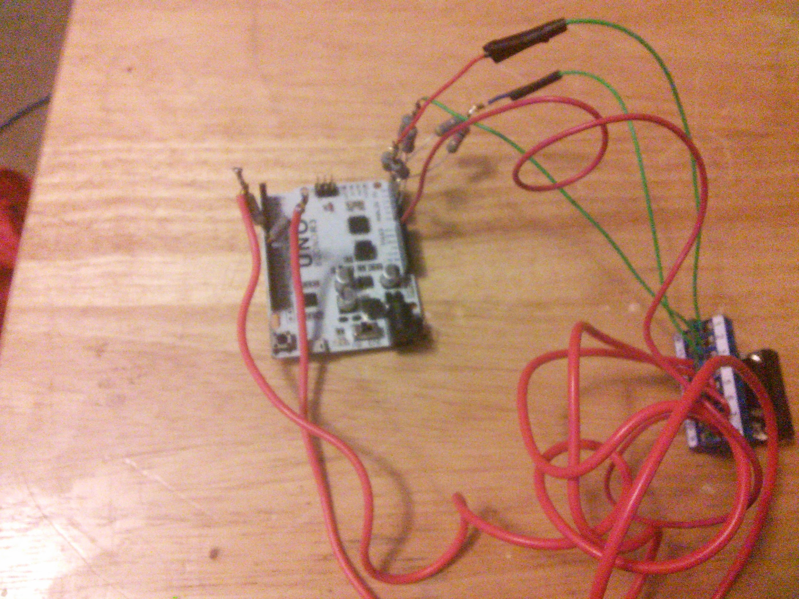
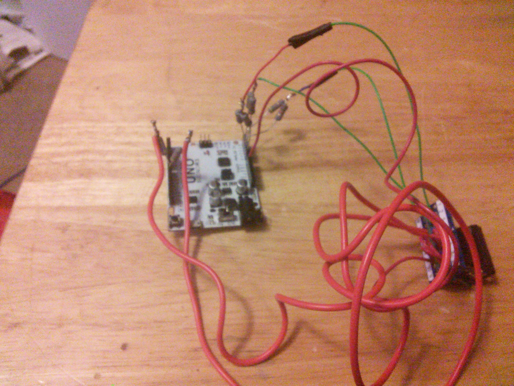
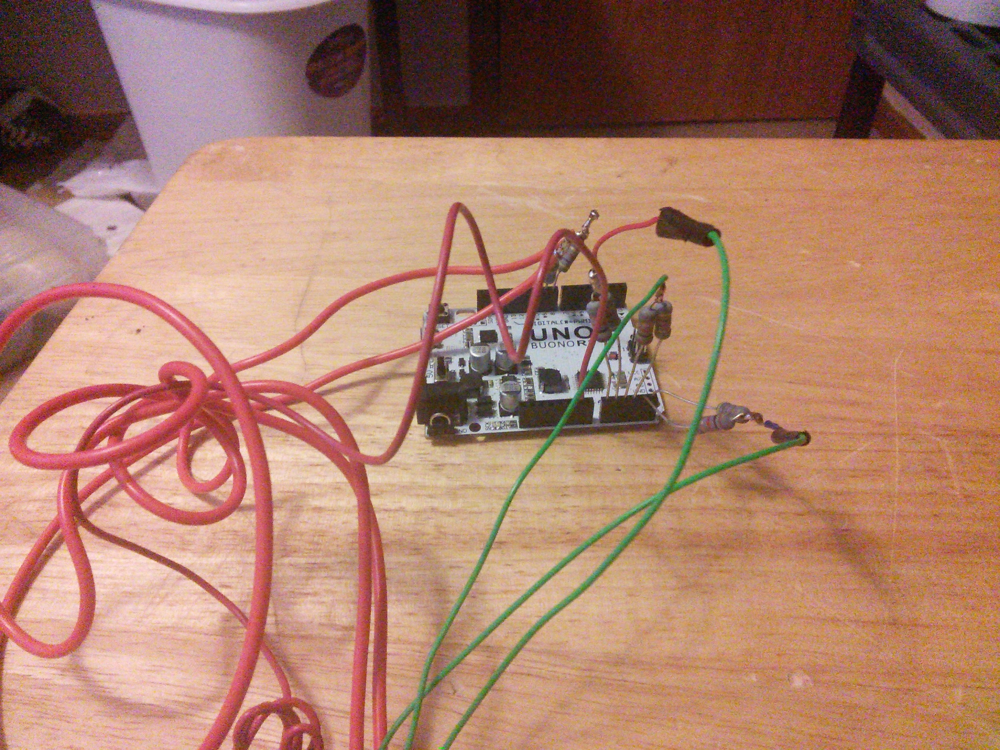
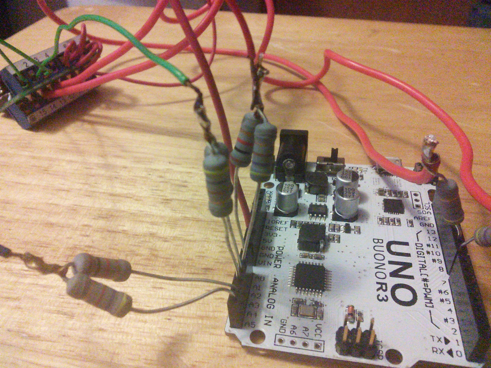
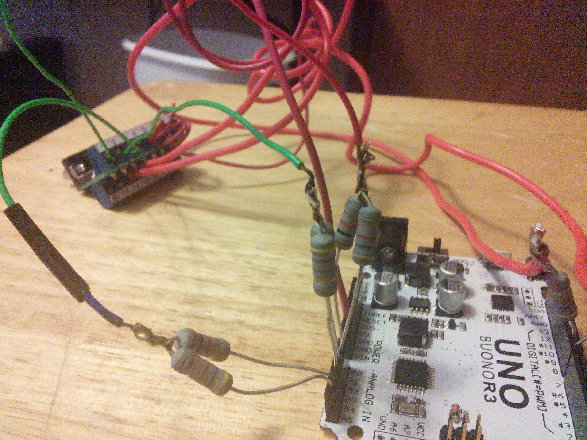

May 6, 2014
Arduino VGA Out, one of the many things I randomly see as I roam the internet. This is kind of a neat project, and it does work, and it was pretty simple to hookup even thou there was an error in the documentation. I do have to say that couple of the sketches on the google code site didn’t work. I’m not sure if they are works in progress or what. That being said, the project did as expected and outputed a display on a VGA monitor. Here is the link to the project,
https://code.google.com/p/arduino-vgaout/ It seems there hasn’t been an activity on the site since June of 2013, so I don’t know what the current status is. I also had to do a little digging to find what pins on the arduino this uses. And pictures of someones completed setup can be found here (It looks like he was using a 2011 version):
https://plus.google.com/photos/117534855759200010314/albums/5687433885778031105?banner=pwa
In the schematic, he also points out that PIN 9 shouldn’t be hooked up on the VGA connector, PIN 5 and PIN 10 should be ground, there was an error in the original schematics that are still on the google code site.
Quite a bit more information can be found on the Arduino forums:
I was going to chop up an old VGA cable to make this when I found that MCM electronics have this (and it’s only \$4.50) and since I wanted to be sure I got the right resistors for this project I was already going to make an order, seemed like a no brainer:
http://www.mcmelectronics.com/product/83-12821
{width="4.6875in" height="1.4375in"}
It probably ending up saving some build time, thou how much would be debatable. So here are a couple of pictures of my setup:
{width="6.5in" height="4.875in"}
{width="6.5in" height="4.875in"}
{width="6.5in" height="4.875in"}{width="6.5in" height="4.875in"}
{width="6.5in" height="4.875in"}
So as you can see, it’s takes up a lot of pins, all of the analog pins, and 2 of the digital pins. The digital pins are used for HSYNC and VSYNC, the analog pins are used for RGB, each color channel takes two pins, and each have a 1K and 470ohm resistor wired up. And yeah, I went a little nuts with the size of the resistors, I wasn’t really thinking about it at the time I ordered them, oh well, they were cheap something like \$0.70 for 10 of them.
I probably need to trim up the resistors a little, but what the heck it works, and it will be one of those projects that I can say I did it, and now it’s in a box… :-)